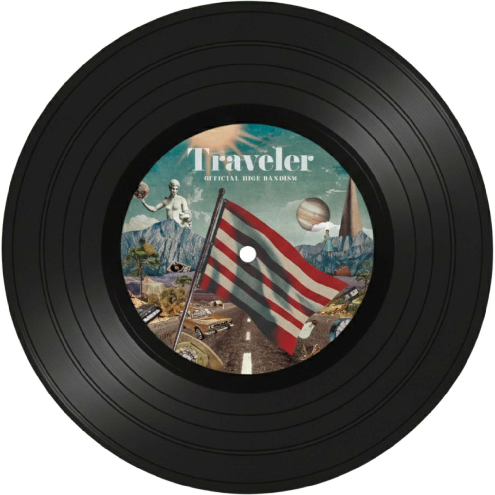
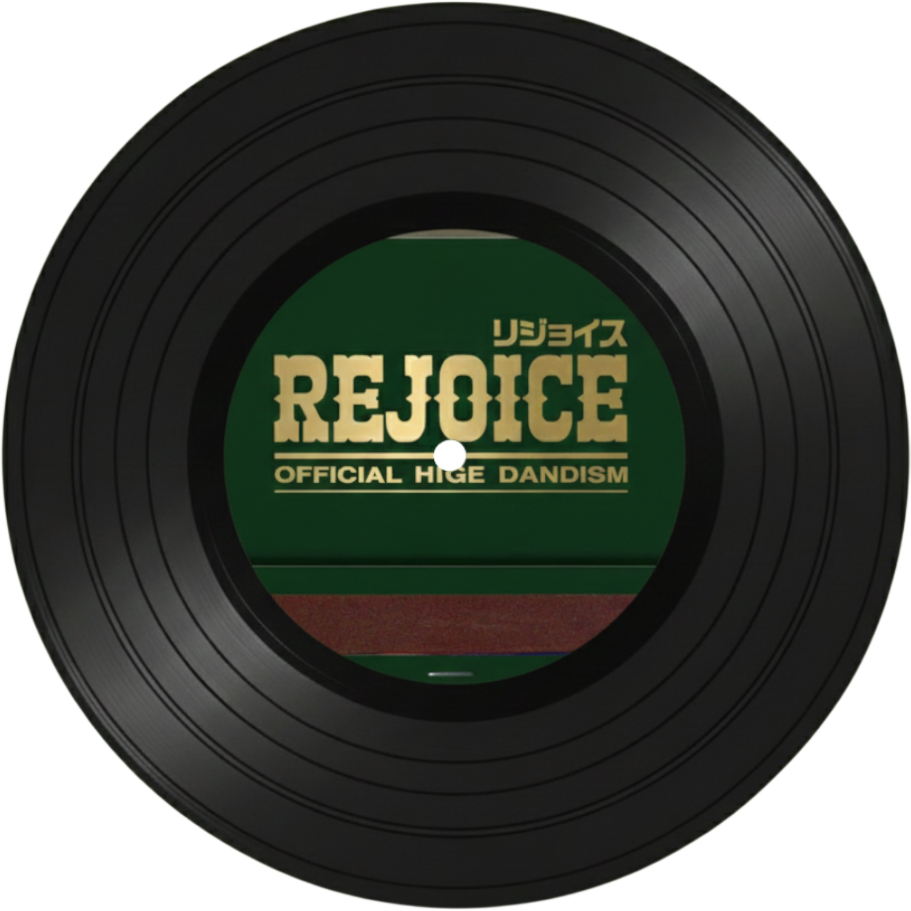

Official髭男dism(오피셜 히게단디즘)

결성일: 2012년 6월 7일
레이블: IRORI Records, Pony Canyon
멤버:
- 마츠우라 마사키(드럼): 1993년생, 파워풀한 드럼 실력과 낚시광
- 후지하라 사토시(보컬, 키보드): 1991년생, 남다른 음역대를 가진 천재 보컬
- 오자사 다이스케(기타): 1994년생, 밴드의 막내이자 헤비메탈 마니아
- 나라자키 마코토(베이스, 색소폰): 1989년생, 베이스와 색소폰의 만능 연주자

Pretender
히게단을 전설로 만든 노래이다. 도입부 멜로디만 들어도 '아, 이 노래!' 하고 알게 될 것이다. 짝사랑의 아픔을 담은 가사인데 멜로디는 역설적이게도 너무 아름답고 신난다.

I LOVE...
드라마 <사랑은 계속될 거야 어디까지나>의 주제곡이다. 사랑이라는 감정을 정말 웅장하고 벅차오르게 표현했다. 드라이브할 때나 위로받고 싶을 때 들으면 최고다.

Mixed Nuts
애니메이션 <스파이 패밀리>의 오프닝곡이다. 첩보물답게 음악이 롤러코스터 타듯이 엄청 빠르고 스릴 넘친다. 베이스 라인이 미쳤다는 소리가 절로 나온다. 듣고 있으면 내가
마치 만화 속 주인공이 된 것처럼 심장이 쫄깃해진다.

Subtitle
일본 스트리밍 역사를 새로 쓴 겨울 연금송이다. 드라마 <Silent>의 주제가인데, 눈 내리는 겨울밤의 차가움과 사랑의 따뜻함이 동시에 느껴진다. 후렴구에서 터져
나오는 고음을 듣고 있으면 막힌 속이 뻥 뚫리는 기분이다.